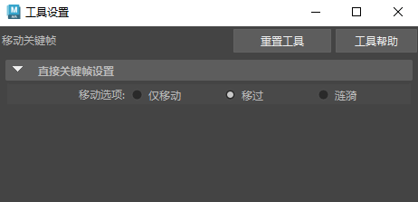

“移动最近拾取的关键帧工具”(Move Nearest Picked Key Tool)  可以在“曲线图编辑器”(Graph Editor)工具栏和“摄影表”(Dope Sheet)的“编辑”(Edit)菜单 > “变换工具”(Transformations tools)中使用。
可以在“曲线图编辑器”(Graph Editor)工具栏和“摄影表”(Dope Sheet)的“编辑”(Edit)菜单 > “变换工具”(Transformations tools)中使用。

使用该工具可以通过单一鼠标操作来操纵各个关键帧和切线。
该工具与“移动工具”(Move Tool)有所不同。该工具同一时间只能操纵一个关键帧，或者操纵某条活动曲线的最近选定关键帧，而无需在图表视图中精确地选择关键帧或切线控制柄。
双击“移动最近拾取的关键帧工具”(Move Nearest Picked Key Tool)图标可打开“工具设置”(Tool Settings)窗口。
直接关键帧设置(Direct Key settings)
设置下列选项之一：
- 仅移动(Move Only)
-
禁用“移动最近拾取的关键帧工具”(Move Nearest Picked Key tool)的功能以在曲线的所有关键帧中扫描（请参见下面的“移过”(Move Over)）。
- 移过(Move Over)
-
使用默认设置可以使工具沿曲线的关键帧扫描整个活动曲线。这样可加快动画曲线的精细调整。
- 仅选定对象(Selected only)
-
如果启用该选项（默认），则单击编辑仅适用于选定曲线。如果禁用该选项，则可以单击来编辑所有曲线。如果希望可以对所有曲线进行单击操纵，请禁用该选项。
提示：仅曲线图编辑器：如果需要使用单击切线编辑工作流，请通过从“曲线图编辑器”(Graph Editor)菜单栏中选择“视图 > 切线 > 始终”(View > Tangents > Always)，将切线控制柄设置为始终显示。
另请参见使用单击曲线编辑。